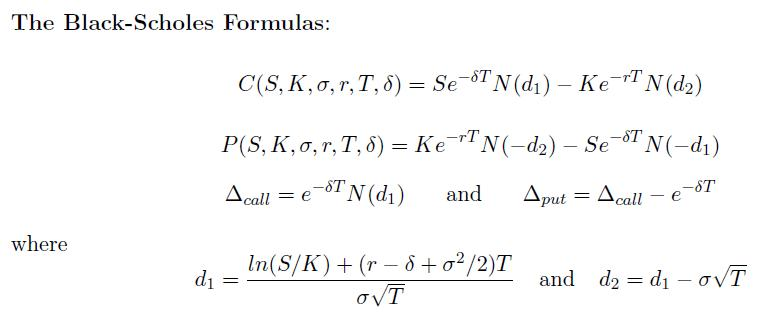

柏力克-舒爾斯期權定價(II)
程式編寫日期: 2014年8月1日
程式會依照下列公式，輸入S, K, σ(%), r(%), T, δ(%)，計算Δcall, Δput, C 及 P。

程式需要在 REG Lin 模式下執行，因此在選擇新程式位置後，按 5 1 選用REG Lin模式。
注意: 藍色的英文字為統計模式中的變數(n 按 shift 1 3 ，maxX 按 shift 2 2 2，maxY 按 shift 2 2 → 2)， e^( 是按shift ex，E是按 EXP，FreqOn 按 Shift MODE ← ← 1。
程式 (239 bytes)
FreqOn: ?→A: ?→B: ?→C: ?→D: C ÷ E 2→C: D ÷ E 2→D: ?→X: ?→Y: X , Y ÷ E 2 ; A DT:
( ln( n÷B ) + ( D - maxY + C2 ÷ 2) maxX ) ÷ ( C√( maxX→A:
Ans - C√( maxX→M: 0→X: Lbl 2: C→Y: 1 ÷ (1 + . 231642Abs( A:
E - 7 √( e^( - A2 ) )( 1274148Ans - 1422484Ans2 + 7107069Ans3 -
7265760Ans2 2 + 5307027Ans^( 5→C: A>0 => 1 - C→C: M→A:
X=0→X: Ans => Goto 2: Ye^( - maxY maxX→A◢ Ans - e^( - maxY maxX◢
nA - BCe^( - DmaxX◢ Ans - ne^( - maxY maxX ) + B ÷ e^( maxX D
註: 如果是使用fx-3650P II或fx-50FH II，上述程式(第二行)中的 maxX ) ÷ ( C√( maxX→A: 可以簡化為 maxX ) ÷ C√( maxX→A: ，可節省1 byte。
例題: S=50, K=40, σ=30%, r=8%, T=1, δ=10%, 求Δcall, Δput, C 及 P。
按 Prog 1 再按 50 EXE 40 EXE 30 EXE 8 EXE 1 EXE 10 EXE (顯示Δcall為0.720180647)
EXE (顯示Δput為 - 0.18465677) EXE (顯示C為10.1265606) EXE (顯示P為1.809343554)
返回 CASIO fx-50FH、fx-3650P II、fx-50FH II及fx-50F PLUS 程式集